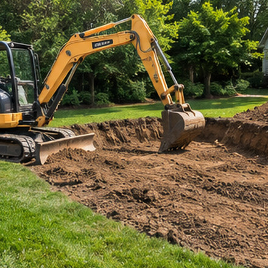
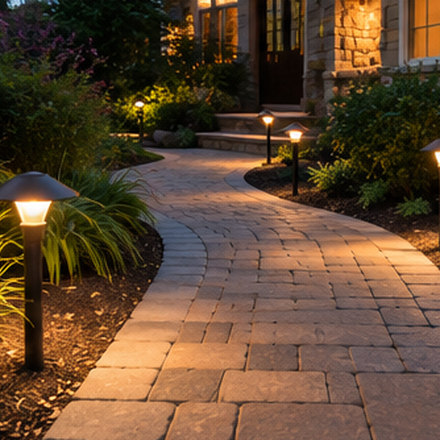

Welcome to Our Site!

Explore ways to make outdoor spaces more useful and attractive, including paving stone patios, driveways, retaining walls, garden features, outdoor kitchens, and lighting.
Hardscaping and landscaping projects involve choices about materials, layout, drainage, and ongoing maintenance. The right approach depends on your property and the scope of the work.
This independent website provides general information and helps visitors make telephone inquiries about relevant services. Inquiries may be connected or referred to independent third-party service providers, rather than handled by the website operator as a contractor.
Explore Outdoor Services
Find practical information about landscaping and hardscaping projects. You can explore our guides, then call to discuss an enquiry with a possible independent service provider.
Paver Installation
Interlocking stones and paved surfaces for patios, driveways, pool decks and walkways. Explore paver projects.
Retaining Walls
Walls that manage elevation changes, define outdoor spaces and help retain soil. Learn about wall options.
Patios & Walkways
Connected, usable outdoor spaces with layouts suited to how people move and gather.
Driveway Paving
Pavement choices and site considerations for residential vehicle access.
Custom Stone & Veneer
Stone details, masonry finishes and architectural accents for outdoor features.
Outdoor Kitchens & BBQ
Outdoor counters, cooking areas and entertaining layouts.
Fireplaces & Fire Pits
Gathering areas around outdoor fire features, subject to local rules.
Paver Cleaning & Sealing
Cleaning and surface protection considerations for existing hardscapes.
Landscape Lighting
Low-voltage lighting for paths, landscaping and exterior features.
Outdoor Project Inspiration
Illustrative landscaping images created for this website. They are not photographs of projects completed by this website operator or any referred provider.




Planning a Project?
For most outdoor projects, it helps to know the area you want to improve, the approximate dimensions, access to the site, drainage concerns and the type of finish you prefer. These details give a service provider a better starting point.
An inquiry may be connected or referred to an independent business. Availability, estimates, price and scheduling are decided by that business.
This page contains information adapted from the former Mike's Lawn and Garden website. That business is no longer operating. This website is independently operated and is not affiliated with the former business.
Telephone referrals may generate compensation for the website operator. Actual services, prices, and appointments are provided or arranged by independent businesses. See the Privacy Policy and Terms & Conditions.